doing your best might look diffrent each day,
but at least you're trying.
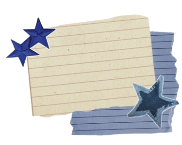
do it for the little
kid that lives within you
Happy Birthday ★
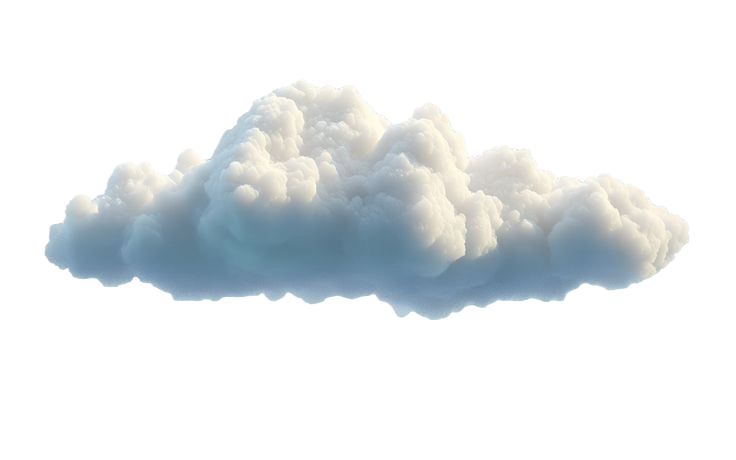
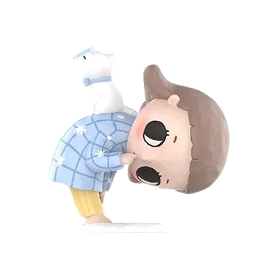
Will you tell me about your wish...
later?
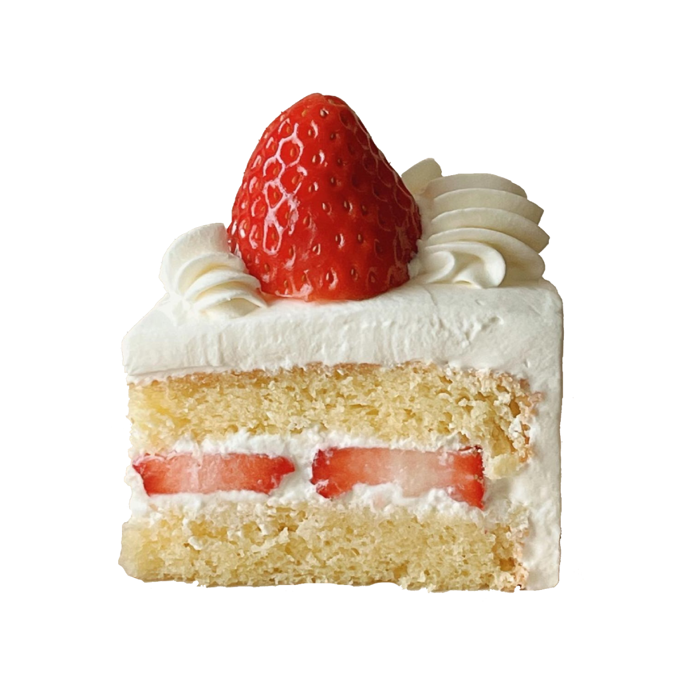
for u
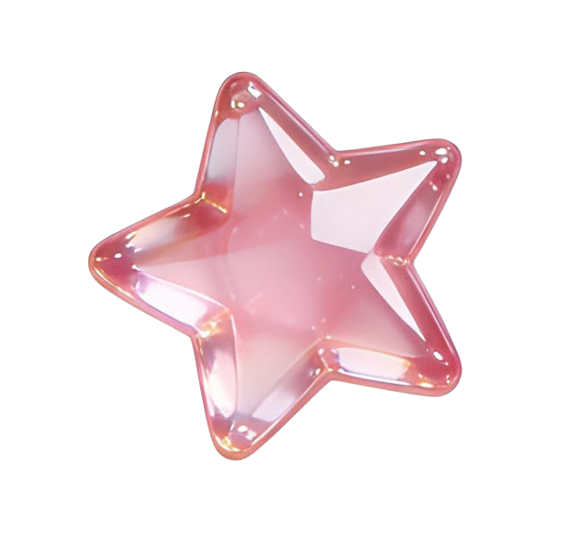
little things
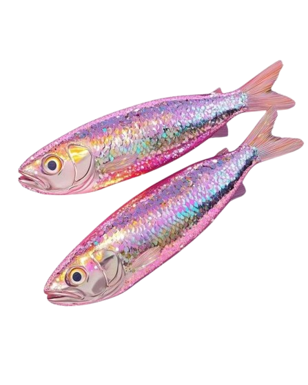
Friendship
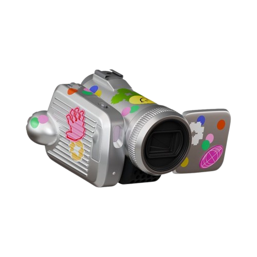
future
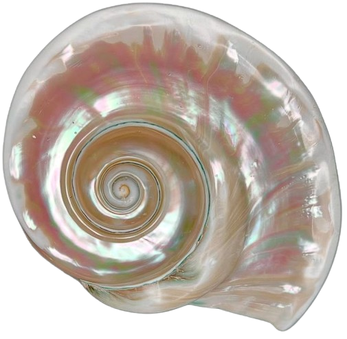
nothing
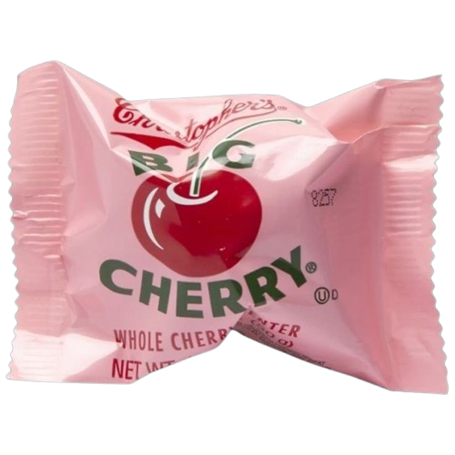
my diaries
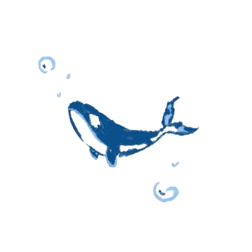
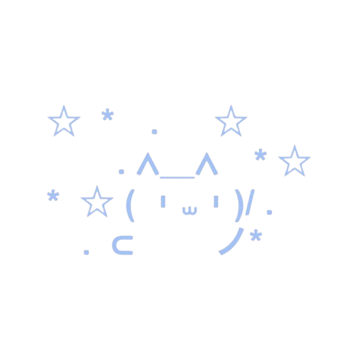
Why I Made This
happy birthday buddy!!!
probably you just started your day nd you're facing all this already.. i still hope you like it, it was made for u after a long debate whether it's too much or u simply deserved it.. nd u actually do deserve it,
I've known you for almost a year nd half now nd we've done so much together, we've watched a movie nd played games nd shared so many things about our lifes so you're basically a real life friend for me nd deserve to get something more valuable than just a happy bday in chat,
this gift can be taken as an advanced ver of emails.. u'll read so many sincere nd silly words hiddenin different icons, some are short nd cheerful nd others can be long nd heartfelt, anyway, it's all urs now mate.. nd I also hope u like the background since u love both blue nd the beach..
sea you in the next letter!!!
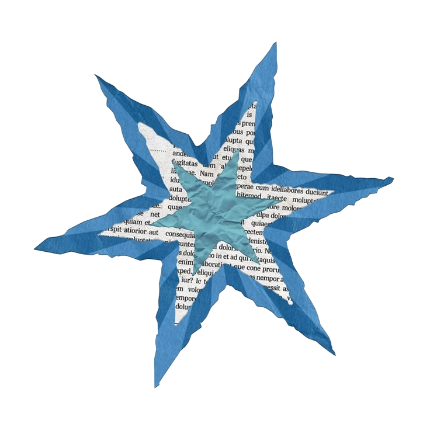
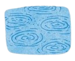
things that remind me of u
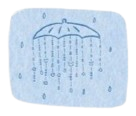
things i like about u
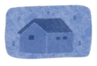
things u don't know
Things That Remind Me of U
♡ the whale, remember our chat theme.. i always get reminded of that when seeing a little blue whale
♡ simply blue and anything that has that colour, the ocean as well
♡ coffee, whenever i tried it i be questioning why ppl even like it, then i realised it's not abt it being too sweet or too sour.. it's just the coffee.. (i failed to say something smart as much as I failed to like it)
♡ the effortlessly funny cartoon characters like the dog from Shaun the sheep nd jake from adventure time.. yeah mostly dogs..
♡ black pawn, cuz i still wanna buy u that key chain i once promised.. probably u forgot it
♡ first the night sky, then sunset, then the light rain and now simply the beach, in each season something had quietly reminded me of you, little moments had captured pieces of ur soul or maybe i knew too little to imagine you so I thought of you when i had seen something that made me at peace?
♡ blue, your favourite one of course i won't forget that, but have you heard that golden orange feels like you as well? that fire-like light of the sun when it sets, unlike blue who seems cool nd deep, at first sight.. it feels fiers and burning with passion and ambition, but from a far.. it's warm and tired like the end of a day
Things I Like About U
♡ I like how passionately u talk about what u love
♡ I like that u'r funny but calm but also cool.. yeah
♡ I like that we have the same birth month
♡ I like ur tiny "tell me what's wrong" even when i have nothing to say
♡ I like ur nephew?
♡ i like that u somehow made an online friendship feel like a real one.
♡ i like that u're simply... u.
♡ nd I like that I only know a little about u nd i can be more curious about the rest
Things U Don't Know
♡
♡
♡
♡
♡
♡
♡
♡
♡
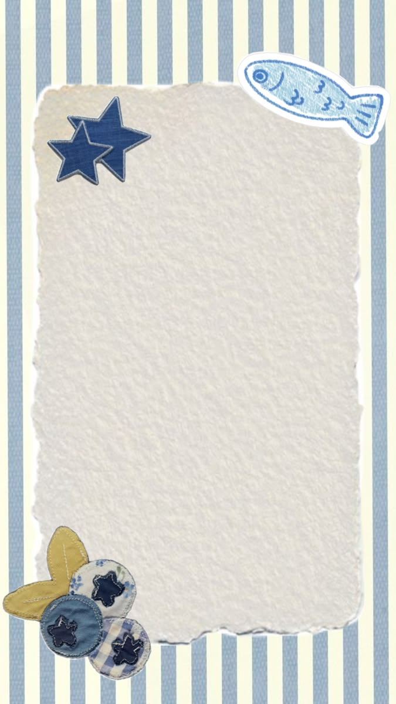
i wonder where we'll be in 9 years.
maybe we'll become actual adults... scary..
maybe you'll find a job.. maybe more than one
maybe we actually sit to a chess board all night
we might celebrate your 90th birthday and
you'll still insist you can beat me?
let's accidentally get lost in a mountain
and call it an adventure.
maybe we'll accidentally meet a cat that decides
to adopt both of us.
maybe we won't do any of these things.
but i still hope that, years from now,
i'll get to say, "hey, u still remember your 22nd birthday?"
hope we can live to that future ♡
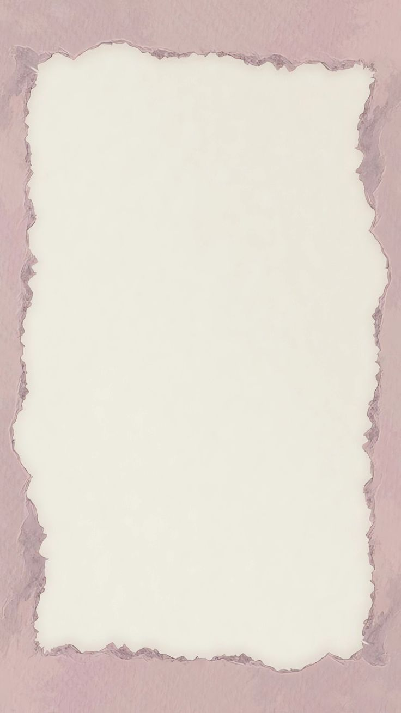
Still Choosing You
sometimes life does get hard, and we get to ask since when everything went wrong, looking back to the old days and simple life we had nd only cherish it from afar, same with the people that we had before, we don't get to choose who enters our lifes, some just leave and we don't hear about them again and some other stay for years but you're no longer longing for them to be there, everyone we've ever met was absolutely for a reason -ig i told u befor how much ur presence helped me first when we met- , we definitely needed them at some points of our lifes, and keeping them or looking for them again is our choice, to ask a friend to meet up again or simply call someone who you haven't connected with in years, it's all our choice,
for me, you're the kind of person i enjoy spending time with, five minutes or a whole week? it doesn't matter as long as I was there with you for a moment, but when you're far, there is times where I feel like I stopped choosing to be in contact with you, I feel bad for not checking on you but not like I'm obliged to, but cuz i still want to be connected to you nd I'm afraid the distance take my person away, some other times i miss you when I'm feeling kinda stressed, not cause you have the absolute solution.. idk but i still miss to talk to you nd think it will be easier even if i didn't share what was stressing me..
recently i realized how easy it is to keep thinking about someone while forgetting to actually reach out. i had missed the chance to tell someone they still mattered to me, and that lead to loosing them nd the part of me that was related to them, and it made me feel bad enough that i promised to never take anyone for granted, if i love my people i still have to be with them and choose them everyday, our hearts might be together but so we have to be close to them.. at least from my own side, I won't stop going for the people i love
so if i disappear for a while sometimes, or if life doesn't stop getting us apart, i still hope you'll know that you're someone i want to keep choosing. friendships don't stay alive on memories alone, they stay alive because someone keeps reaching out. i'd like to be that someone.
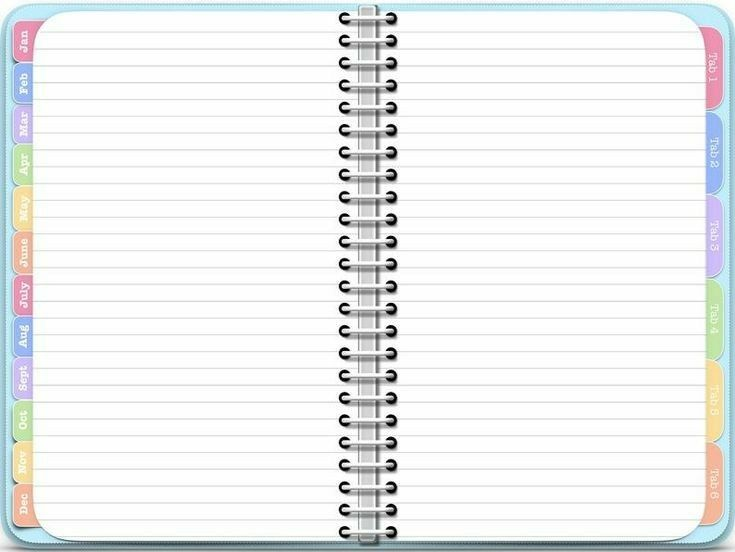
Cherry's Diaries
**A Letter To Him**
""I see it clearly now. The care you gave me was genuine, steady, and kind.. not the weight of romance, but the warmth of someone who truly wanted the best for me. You guided me away from places I might have been hurt, you reminded me to choose my life, my work, my growth. You didn't want to be a distraction, and that itself was love in its own way.
I know now you didn't owe me constant presence, nor did you promise the kind of closeness I once wished for. Yet, you still called me dear. You still laughed with me, played with me, believed in me. And for that, I will always be grateful.
You left your mark, not through possession, but through protection. Not through promises, but through prayers. And I honor that now — lighter, freer, understanding it wasn't less, it was simply different.
I love you still, but with peace. I look forward to you still, but without waiting. Thank you for being exactly what you were in my life.""
I have wrote this around the summer of last year, it's an old letter that was never meant to be sent to u, but now the letter showed up as part of my diary.. it is free now ig
cherry of that time had gone thru so many hard days nd i belive she cried a lot but hated to admit it,
nd so manny unnessesary thoughts has been weighting down on her head that she thought to finally acknowledge, write it on a paper, nd just let it be,
this letter that u'r seeing now is the final chapter of that diary, the ease nd peace for her, it was never ur fault nd she had never blamed u on a single thought in her head, u were just existing there why would u have to be guilty for it?
finally,.. thank u for spending part of ur birthday here!!